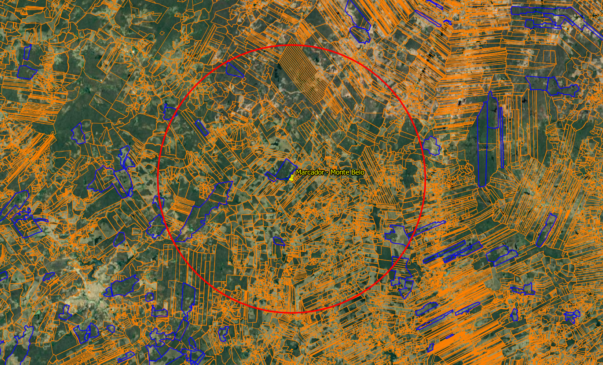
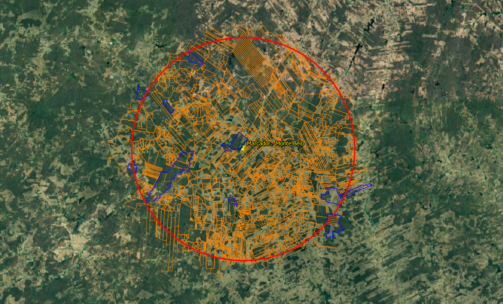
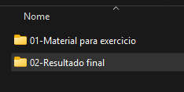

Neste tutorial, vamos montar um fluxo simples no QGIS para filtrar apenas as poligonais do SIGEF e do SICAR que estejam dentro de uma área de interesse definida a partir de um ponto e de um raio de busca. A proposta é automatizar esse processo com o Model Designer, permitindo repetir a análise de forma mais rápida sempre que você precisar.
Contexto inicial


Material Disponibilizado
Os arquivos usados e gerados neste tutorial foram organizados em pastas para facilitar a consulta.
Na pasta 01-Material para exercício, estão os arquivos de entrada utilizados no processo:
- O ponto de entrada;
- O arquivo com as poligonais do SIGEF;
- O arquivo com as poligonais do SICAR.
Neste material, os arquivos do SIGEF e do SICAR correspondem ao estado do Ceará.
Na pasta 02-Resultado Final, estão os arquivos gerados ao final do exercício, incluindo:
- O arquivo final com as poligonais do SIGEF e SICAR filtrados;
- As poligonais do SIGEF filtradas;
- As poligonais do SICAR filtradas.

Arquivos do Projeto
Abrir pasta do projeto no Google Drive01-Criar o marcador de estudo
Antes de abrir o QGIS, é interessante criar um marcador/ponto no Google Earth Pro. Esse ponto será usado como referência para testar se o modelo está funcionando corretamente.
Depois de definir o local da sua área de estudo, salve o marcador em KML ou KMZ e siga para a próxima etapa.
Atenção: como os arquivos do SIGEF e do SICAR disponibilizados neste exercício são do Ceará, escolha um ponto localizado dentro do estado. Se preferir trabalhar com outra região, será necessário obter os arquivos correspondentes diretamente nas bases do SIGEF e do SICAR.
Se não quiser criar esse marcador manualmente, você pode usar o arquivo já disponibilizado junto com o material do tutorial.
02-Criar o projeto no QGIS
Agora vamos abrir o QGIS e criar um novo projeto.
No canto superior esquerdo, clique em Projeto > Novo. Em seguida, vá novamente em Projeto > Salvar Como para definir o local onde esse projeto será armazenado no computador.
Esse passo é importante para manter o trabalho organizado desde o início.
03-Ativar a Caixa de Ferramentas
A área do QGIS logo abaixo dos menus principais faz parte da interface de trabalho com barras e painéis.
Clique com o botão direito em uma área em branco dessa região. Será exibida uma lista com opções de Painéis e Barra de Ferramentas. Ative a opção Caixa de Ferramentas.
Esse painel será muito importante, porque é nele que encontraremos as ferramentas de processamento usadas no projeto e também no Model Designer.
04-Abrir o Model Designer
Agora vamos abrir o Model Designer do QGIS, também conhecido como Modelador Gráfico.
Você pode fazer isso de três formas:
- pelo menu superior do QGIS;
- pela Caixa de Ferramentas;
- usando o atalho Ctrl + Alt + G.
Se abrir pela Caixa de Ferramentas, procure o ícone com engrenagens e clique em Criar novo modelo.
05-Entender a estrutura do Model Designer
No Model Designer, trabalhamos principalmente com dois elementos: Entradas e Algoritmos.
As Entradas são as informações que o modelo precisa receber para funcionar, como uma camada, um número ou um sistema de coordenadas.
Os Algoritmos são as ferramentas que processam essas informações. Em outras palavras, são as etapas que executam o trabalho dentro do modelo.
Antes de começar a montagem, defina o nome e o grupo do seu modelo na área de propriedades. Isso ajuda a manter tudo organizado, especialmente se você criar outros modelos relacionados ao mesmo tema no futuro.
Depois disso, já vale a pena fazer um primeiro salvamento do modelo.
06-Configurar as entradas do modelo
Na Caixa de Entradas, procure pela opção Camada Vetorial. Essa será a entrada usada para informar o ponto de estudo. No exemplo, vamos chamá-la de Ponto de Entrada.
No campo de tipo de geometria, selecione Ponto, já que o modelo será baseado em um marcador de entrada a partir do qual será criado o raio de análise.
Em seguida, adicione também a entrada SRC. Ela será importante porque vamos trabalhar com distância em metros, então precisamos garantir que o ponto de entrada esteja em um sistema de coordenadas adequado para esse tipo de cálculo.
Ao final dessa etapa, o modelo deverá exibir dois cards amarelos: um para o Ponto de Entrada e outro para o SRC.
07-Configurar o reprojetar camada
Na Caixa de Algoritmos, procure por Reprojetar Camada.
Ao abrir a janela do algoritmo, você pode preencher a descrição com um nome que facilite a identificação dessa etapa.
Em Camada de Entrada, selecione a entrada do modelo correspondente ao Ponto de Entrada.
Em SRC Destino, em vez de deixar um valor fixo, configure para usar a entrada do modelo. Assim, o sistema de coordenadas poderá ser definido no momento da execução, tornando o modelo mais flexível.
Quando concluir, o card do algoritmo Reprojetar Camada ficará conectado ao Ponto de Entrada e ao SRC Ponto de Entrada.
Se quiser, aproveite esse momento para organizar visualmente os cards na tela.
08-Criar a entrada do raio
Agora vamos criar a entrada responsável pelo valor do raio.
Na Caixa de Entradas, procure por Número. Essa entrada permitirá informar a distância do raio sempre que o modelo for executado.
No campo de descrição, use um nome claro, como Definir Valor do Raio. Em tipo de número, escolha Float, para permitir valores com casas decimais, se necessário.
Você também pode definir um valor padrão. Neste tutorial, vamos usar 10000, que corresponde a 10.000 metros.
Depois de confirmar, aparecerá um novo card no modelo com a entrada do valor do raio.
09-Criar o buffer
Na Caixa de Algoritmos, procure pela ferramenta Buffer.
Na configuração, em Camada de Entrada, escolha Saída do Algoritmo e selecione a camada resultante de Reprojetar Camada. É ela que servirá como base para criar o raio de análise.
Em Distância, selecione Entrada do Modelo e escolha a entrada criada para definir o valor do raio.
Também é possível ajustar alguns detalhes da geometria do buffer. No QGIS, o círculo é representado por segmentos. Por isso, quanto maior o número de segmentos, mais suave ficará o contorno. Um valor como 20 costuma oferecer um bom resultado sem deixar o processamento desnecessariamente pesado.
Para manter um formato arredondado, deixe Estilo de Cobertura do Fim e Estilo da União como Arredondado.
Ao concluir, o card do Buffer aparecerá conectado à camada reprojetada e à entrada do valor do raio.
10-Adicionar camadas para filtragem
Agora vamos adicionar as camadas que serão filtradas.
Novamente em Entradas, procure por Camada Vetorial. Desta vez, crie duas entradas com geometria do tipo Polígono:
- uma para o SICAR;
- outra para o SIGEF.
Ao final, o modelo deverá exibir dois novos cards amarelos, um para cada base.
Observação: na janela de configuração da entrada existe a opção Obrigatório. Se ela estiver marcada, o modelo só será executado quando aquela camada for informada. Se você quiser deixar o uso de uma das camadas como opcional, basta desmarcar essa opção.
11-Extrair e filtrar poligonais
Na Caixa de Algoritmos, procure por Extrair por Localização. Vamos usar esse algoritmo duas vezes: uma para o SICAR e outra para o SIGEF.
Em Extrair Feições de, selecione a camada de entrada correspondente.
Na opção Onde as feições (predicado geométrico), o padrão costuma ser Interseccionam. Neste tutorial, é exatamente essa relação que queremos usar, pois ela retorna todas as poligonais que tenham contato com a área do buffer, seja total ou parcial.
Em Ao comparar com as feições do, selecione Saída do Algoritmo e escolha a camada gerada pelo Buffer.
Na saída final, dê um nome claro para cada resultado, como SICAR-Filtro e SIGEF-Filtro. Esses nomes serão importantes porque são eles que aparecerão no momento de salvar os arquivos ao executar o modelo.
Depois de configurar as duas extrações, o modelo deverá exibir dois cards do algoritmo e dois cards verdes, indicando as saídas finais.
Se necessário, organize os elementos na tela e salve o modelo.
12-Salvar e testar o modelo
Com o modelo pronto, agora podemos carregar no QGIS as camadas que serão usadas no teste.
Adicione o arquivo KML/KMZ do ponto de estudo arrastando-o para dentro do QGIS. Depois, faça o mesmo com os arquivos do SIGEF e do SICAR.
Ao passar o mouse sobre as camadas, o QGIS mostra algumas informações importantes, como o tipo de geometria e o EPSG. No caso do exercício, o arquivo do SIGEF possui essa informação, mas o do SICAR pode aparecer sem SRC definido.
Quando isso acontece, é recomendável usar a ferramenta Reprojetar Camada para gerar um novo arquivo com o sistema de coordenadas corretamente definido.
Na hora de salvar, escolha o formato Shapefile (.shp). Assim, você terá uma camada pronta para ser usada no modelo.
13-Executar o modelo
Com todas as camadas prontas, vá até a Caixa de Ferramentas e procure o modelo criado dentro de Modelos do Projeto.
Abra o modelo para executar. A janela exibirá os campos necessários para preencher:
- Definir Valor do Raio: distância do buffer;
- Ponto de Entrada: marcador criado no Google Earth;
- SICAR: arquivo com as poligonais do SICAR;
- SIGEF: arquivo com as poligonais do SIGEF;
- SRC Ponto de Entrada: sistema de coordenadas usado para o ponto;
- SICAR-Filtro e SIGEF-Filtro: caminhos onde os arquivos finais serão salvos.
Nos campos de saída, clique nos três pontos e escolha Salvar no arquivo. Defina o local e salve em Shapefile.
Se a opção Abrir arquivo de saída depois de executar o algoritmo estiver marcada, o QGIS carregará automaticamente os resultados ao final do processamento.
Depois de executar, o sistema irá gerar as camadas já filtradas de acordo com o raio definido.
14-Exportar para KML
Com os arquivos filtrados já gerados, agora vamos exportá-los para KML.
Clique com o botão direito sobre a camada e vá em Exportar > Guardar Elementos Como.
Na janela de exportação:
- em Formato, escolha KML;
- em Nome do Arquivo, defina o local e o nome do arquivo;
- em Nome da Camada, use apenas o nome da camada, sem o caminho da pasta.
Se quiser que cada feição apareça com um identificador no Google Earth, configure o NameField com um campo de identificação apropriado.
Os campos marcados para exportação serão os mesmos exibidos quando você clicar na feição no Google Earth. Se quiser uma visualização mais limpa, exporte apenas os campos realmente importantes.
Também é recomendável desmarcar Metadados persistentes na camada, já que esse arquivo extra não será necessário para este fluxo.
Repita o processo para as camadas do SIGEF e do SICAR, ajustando o NameField conforme o campo de identificação de cada base.
15-Salvar o modelo para reutilização
Até aqui, o modelo está salvo dentro do projeto atual. Isso funciona bem, mas significa que ele ficará vinculado a esse arquivo .qgz.
Se você quiser reutilizar esse modelo em qualquer projeto do QGIS, vale a pena salvá-lo também na pasta de modelos do programa.
Para isso, na Caixa de Ferramentas, clique com o botão direito sobre o modelo e escolha Editar Modelo. Depois, no Model Designer, use a opção Salvar Modelo Como.
Salvando na pasta padrão do QGIS, o modelo passará a aparecer na seção Modelos, e não apenas em Modelos do Projeto.
Assim, você poderá usar o mesmo fluxo em projetos novos, antigos ou até em um projeto em branco.
16-Visualizar no Google Earth
Agora vamos abrir os arquivos no Google Earth para conferir o resultado final.
Depois de localizar os arquivos salvos, abra-os normalmente. Se quiser melhorar a visualização, você pode ajustar o estilo das camadas.
Clique com o botão direito sobre a pasta ou camada, acesse Propriedades e vá até a aba Estilo/Cor. Em seguida, use a opção Compartilhar estilo para aplicar uma simbologia mais organizada.
Você pode definir cores diferentes para o SIGEF e para o SICAR, facilitando a leitura visual.
Na aba de altitude, também é possível fazer pequenos ajustes para melhorar a sobreposição entre as camadas. Em alguns casos, elevar levemente uma delas já ajuda a destacar melhor os limites.
Ao final, você terá um arquivo mais limpo, organizado e pronto para análise visual no Google Earth.
Conclusão
Agora você tem um fluxo no QGIS capaz de filtrar automaticamente as poligonais do SIGEF e do SICAR dentro de um raio de busca definido a partir de um ponto.
Além de facilitar a análise, esse modelo ajuda a ganhar tempo em atividades repetitivas e pode ser adaptado para outras necessidades no futuro.